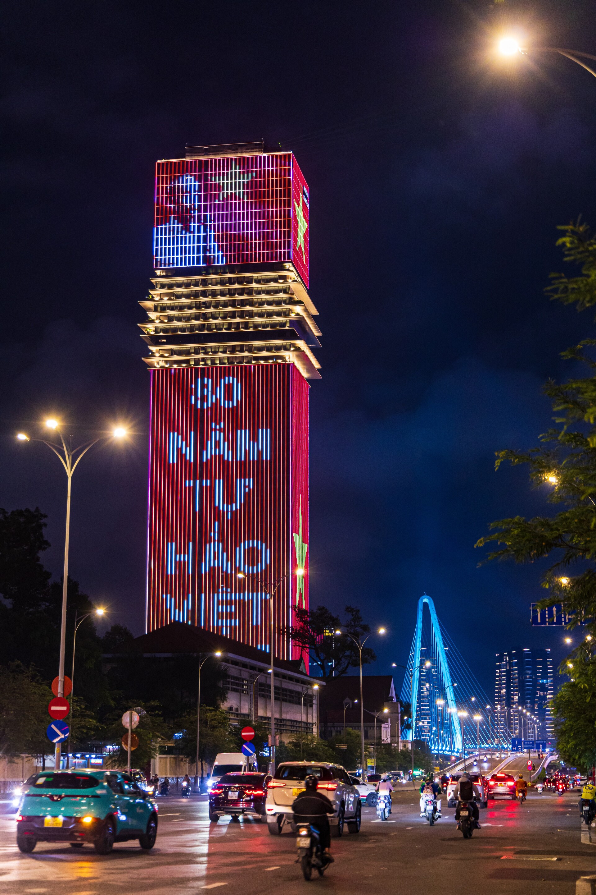

Quyền dân tộc
Thiêng liêng và bất khả xâm phạm
Mỗi dân tộc đều có quyền sống, quyền sung sướng và quyền tự do.
|
Chương 3 là một mạch lập luận liền mạch: độc lập là nền tảng, CNXH là hướng đi và là điều kiện để độc lập vững bền.

Từ ký ức lịch sử, biểu tượng độc lập, đời sống nhân dân đến công cuộc kiến thiết và hiện đại hóa.
Nhấn để tìm hiểu
Quyền thiêng liêng, bất khả xâm phạm; độc lập thực sự, hoàn toàn, gắn với thống nhất lãnh thổ và đời sống nhân dân.
Nhấn để tìm hiểu
Con đường cách mạng vô sản, sự lãnh đạo của Đảng, sức mạnh đại đoàn kết và tính chủ động sáng tạo.
Nhấn để tìm hiểu
Xã hội do nhân dân làm chủ, kinh tế phát triển, văn hóa — đạo đức tiến bộ và đời sống ngày càng tốt hơn.
Nhấn để tìm hiểu
Độc lập là tiền đề tiến lên CNXH; CNXH là điều kiện bảo đảm độc lập có nội dung thực chất và vững chắc.
"Không có gì quý hơn độc lập tự do"— Hồ Chí Minh
Mỗi dân tộc đều có quyền sống, quyền sung sướng và quyền tự do.
Nền độc lập chỉ trọn nghĩa khi người dân được hưởng thành quả.
Tự quyết về chính quyền, đối nội, đối ngoại, quân sự, kinh tế.
Độc lập gắn liền mục tiêu non sông thống nhất, Bắc — Nam sum họp.
Chọn con đường đúng đắn, phù hợp với điều kiện lịch sử Việt Nam
Tổ chức tiên phong với đường lối đúng đắn, vững vàng
Sức mạnh nhân dân, lấy công — nông làm nền tảng
Không ỷ lại, chủ động thích ứng mọi hoàn cảnh
Phù hợp từng giai đoạn, khi cần dùng bạo lực cách mạng
"Chủ nghĩa xã hội là mục đích để xây dựng đất nước trong thời kỳ mới, đồng thời cũng là công cụ để đi đến xây dựng thành công chủ nghĩa cộng sản"
Đại hội XIII tiếp tục bổ sung, cụ thể hóa rõ hơn: "Phấn đấu đến giữa thế kỷ XXI, nước ta trở thành nước phát triển, theo định hướng xã hội chủ nghĩa".
"Xã hội xã hội chủ nghĩa mà nhân dân ta xây dựng là một xã hội: Dân giàu, nước mạnh, dân chủ, công bằng, văn minh."
Chủ nghĩa xã hội là giai đoạn đầu để tiến lên xây dựng chủ nghĩa cộng sản.
"Làm tư sản dân quyền cách mạng và thổ địa cách mạng để đi tới xã hội cộng sản."
Nhấn vào để đánh dấu bạn đã thuộc lòng. Hoàn thành tất cả để ăn mừng!
CNXH được nhìn từ
đời sống con người
Nội dung cốt lõi không ở tên gọi hình thức, mà ở việc nhân dân làm chủ, đất nước phát triển và con người được giải phóng.
Nhân dân làm chủ
Dân chủ là động lực và mục tiêu, kết hợp quyền với trách nhiệm và kỷ cương.
Kinh tế phát triển
Xây dựng cơ sở vật chất — kỹ thuật để đất nước thoát nghèo nàn, lạc hậu.
Văn hóa tiến bộ
Bồi dưỡng đạo đức, con người mới và đời sống tinh thần lành mạnh.
Xây đi đôi với chống
Phát huy động lực, đồng thời ngăn suy thoái, tham nhũng, lãng phí.